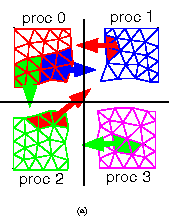
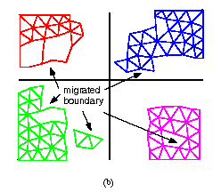
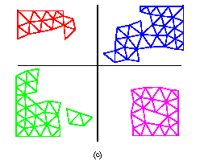

PMDB Mesh Migration



Example of arbitrary multiple migration illustrating the
three-stage process: (a) senders migrate mesh entities to receivers,
(b) senders and receivers send the migrated boundary to the owners,
and (c) owners update the boundary data structures and notify affected
processors.